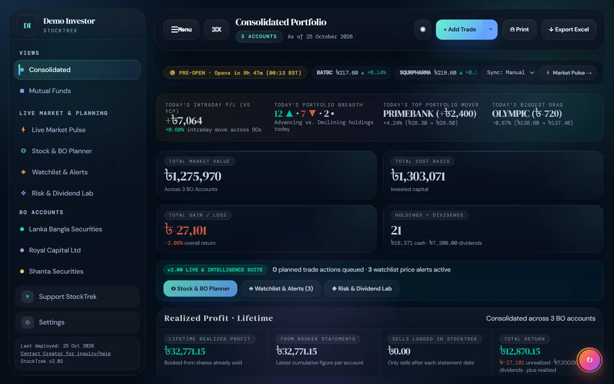
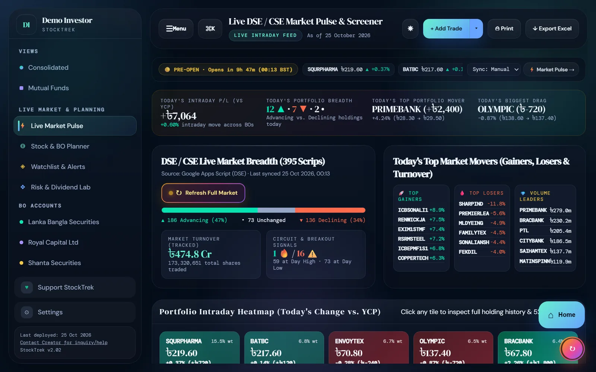
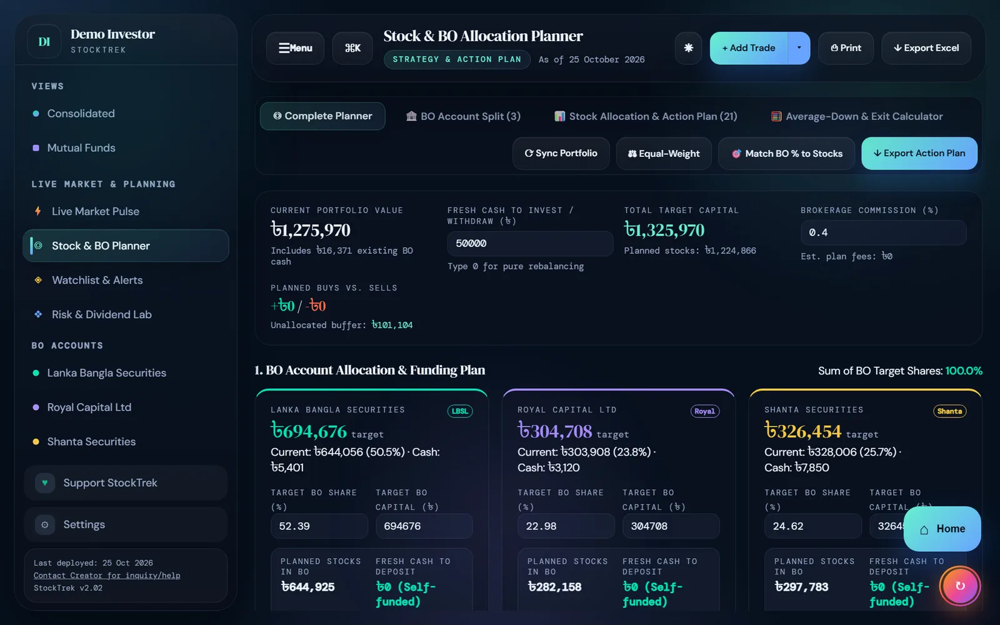
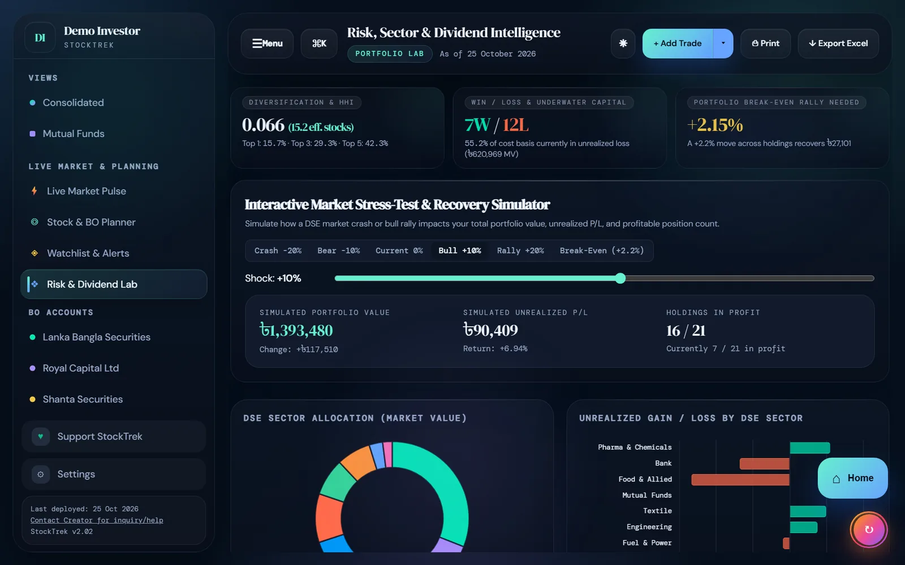
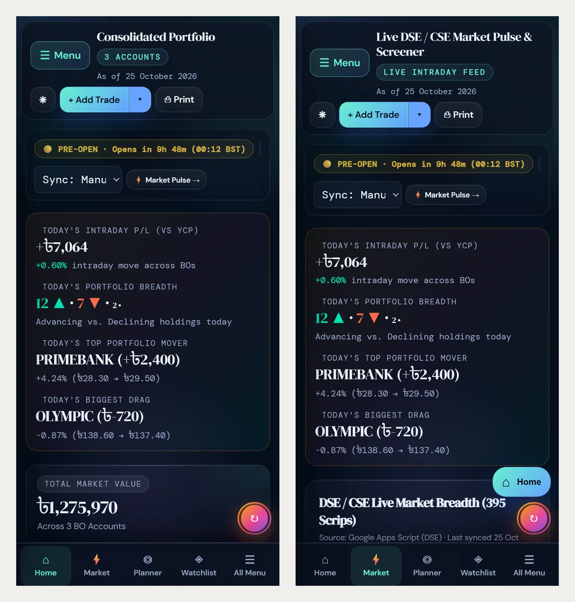

An investment platform that consolidates multiple Beneficiary Owner (BO) accounts for Bangladesh stock-market (DSE/CSE) investors into one view, then adds live market data, allocation planning, and risk and dividend analytics, on phone and laptop.
Retail investors in Bangladesh's stock market often hold securities across more than one Beneficiary Owner (BO) account with different brokers, with no single place to see combined performance. Reconciling gain/loss, allocation, and dividend income across accounts is typically a manual, spreadsheet-driven chore repeated at every broker's end-of-day statement.
StockTrek started as a single-file dashboard and has grown into a full portfolio platform (the current release is v2.02). The interface is still one HTML file with no build step, with Chart.js for the visualizations, now hosted on Firebase. Users sign in with email or Google, and each portfolio syncs to its own Firestore space and is mirrored in the browser, which also keeps a daily restore point for the last 10 days.




Consolidated Dashboard
Screenshots show an invented sample portfolio (not real accounts) priced with live DSE data.
Core Features
Multi-account consolidation — merges holdings across every BO account into one view, with weighted-average cost and unified P&L, plus a separate Mutual Funds dashboard with a concentration check.
Statement import — reads LankaBangla Securities, Royal Capital and Shanta Securities statements from PDF, Excel or pasted text. Pasted statements are checked so that quantity × average cost and quantity × rate add up to the statement totals, and every import shows a preview first, with undo afterwards.
Manual trades and dividends — buy, sell, or overwrite any holding, including mutual and unit funds and cash positions, with dividend and realized-gain tracking per account.
Reports and export — a clean report-style A4 print view and a multi-sheet Excel report with live formulas.
What's New in v2
Live Market Pulse. One-click or automatic (every 1, 3 or 5 minutes) price sync from the live DSE feed updates every holding across all accounts. A market terminal shows DSE trading hours and countdown, advance/decline breadth, top gainers, losers and volume leaders, a portfolio intraday heatmap, and a searchable DSE/CSE screener with a circuit-breaker radar. The dashboard adds a live ticker tape and today's intraday P/L against the previous close.
Advanced analysis and planning. A Stock & BO Allocation Planner turns target weights into an action plan: cash to deposit or withdraw per BO account, shares to buy or sell, brokerage cost, and the projected new average cost. Average-down, target-cost and exit-price calculators sit alongside it, and a Watchlist adds buy-zone, fair-value and stop-loss alerts with a dated trade-thesis journal.
Risk, sector and dividend intelligence. Automatic sector classification with sector-cap guardrails, a six-metric portfolio risk scorecard, a crash and rally stress-test (including the rally needed to break even), a Bangladesh dividend AIT tax estimator, and a multi-year DRIP compounding projector.
Built for phone and laptop. On laptops, a sidebar holds every view. On phones it becomes a slide-in menu with a bottom navigation bar (Home, Market, Planner, Watchlist, All Menu), with larger readable type, and print works on phones too.

The same app on a phone: a menu button replaces the sidebar, and a bottom bar (Home, Market, Planner, Watchlist, All Menu) keeps the main views a thumb away. Sample portfolio.
Key Outcomes
Consolidates holdings from multiple BO accounts into a single gain/loss and asset-allocation view, a workflow most retail DSE/CSE investors otherwise build by hand in spreadsheets.
Statement import with built-in reconciliation checks removes manual bookkeeping steps that are easy to get wrong across several brokers.
Live prices, the planner and the risk tools take a portfolio from record-keeping to decision support: what is happening today, what to buy or sell to reach a target, and how it would hold up in a crash.
Works as the same product on a phone and a laptop, with each investor's data kept in their own account.